People & Organizational Interest
Interested in how people communicate, collaborate, experience processes, and contribute to healthy organizational environments.
“The goal is to turn data into information, and information into insight.”
People & HR · HR Operations · HR Analytics
MCA graduate building a career in People & Culture, combining analytical thinking, operational exposure, communication, leadership, and people-focused problem solving.
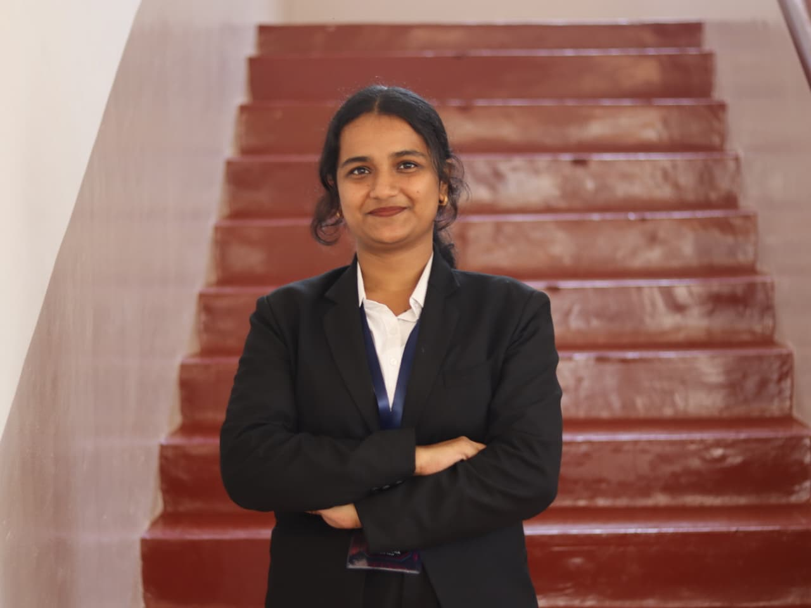
namrathapadiyart@gmail.com
ABOUT ME
Interested in how people communicate, collaborate, experience processes, and contribute to healthy organizational environments.
Experienced in understanding requirements, communicating information across groups, coordinating follow-ups, and working toward resolution.
Brings structured problem solving, reporting, research, and operational exposure to people-focused decisions and HR workflows.
Strengthening analytical capabilities through industry simulations, certifications, research and hands-on projects.
EDUCATION
CGPA : 9.00 / 10
CGPA : 8.54 / 10
EXPERIENCE

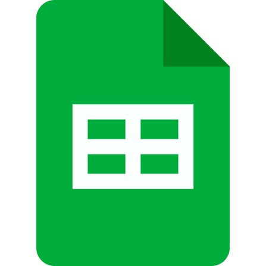
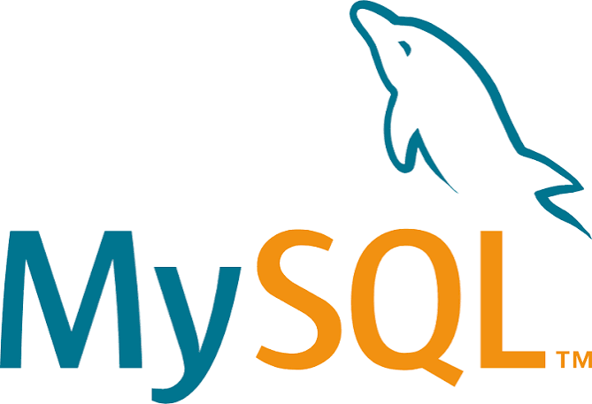
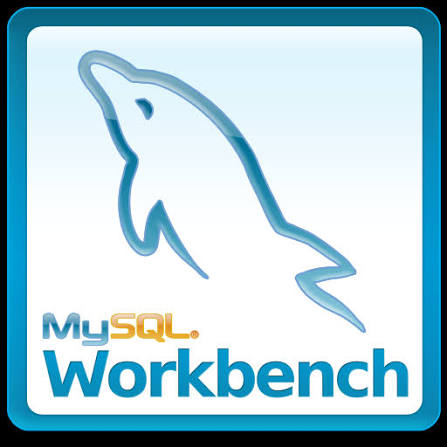


HR & ANALYTICAL TOOLKIT
A practical toolkit supporting HR operations, people-focused reporting, structured analysis, and communication.
Tracking · Analysis · PivotTables · Reporting
Documentation · Communication · Professional records
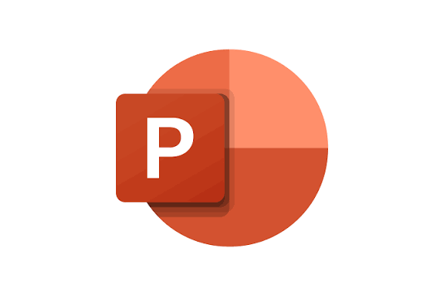
Presentations · Insight communication · Stakeholder updates
Collaborative tracking · Data organisation · Shared reporting

Dashboards · KPI analysis · Visual reporting

Structured data · Querying · Data validation

Data analysis · Automation · Visualization

Cleaning · Validation · Transformation
CORE CAPABILITIES
Experience working with clients, teams, participants, faculty, sponsors, judges, and technical or operational stakeholders.
Understanding requirements, communicating information across groups, presenting ideas, and adapting communication to different audiences.
Understanding the situation, gathering relevant information, identifying patterns, and working toward practical solutions.
Interest in how people experience processes, communication, collaboration, learning, and organizational environments.
Working with structured data, identifying patterns, building reports, and using evidence to support decisions.
Experience coordinating between business, operational, technical, academic, and student teams.
Comfortable learning unfamiliar systems and concepts, then applying them in practical situations.
Experience taking responsibility for student initiatives, events, teams, research presentations, and collaborative activities.
FEATURED PROJECTS
HR-focused workforce projects are featured first, followed by selected analytical work demonstrating structured problem solving, reporting, and decision support.

Business analytics solution focused on merchandising, customer behaviour and profitability using Excel.


Operational analytics case study identifying delivery bottlenecks and improving logistics performance.

Occupancy and facility performance analytics supporting operational monitoring and resource utilization.

SQL-driven operational analytics focused on improving adoption workflows and shelter performance.

Exploratory data analysis identifying customer churn patterns, retention risks and business opportunities.

Workforce analytics project evaluating employee performance, engagement and organizational trends.
HR LEARNING & VIRTUAL EXPERIENCE
Selected HR learning, virtual experiences, and analytical simulations supporting a deliberate transition into People & Culture roles.
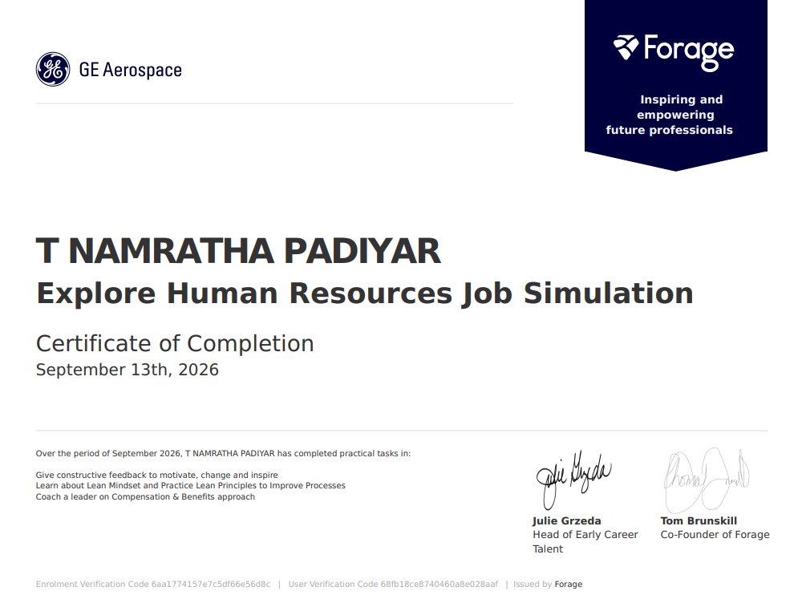
GE Aerospace · Data Analytics Job Simulation
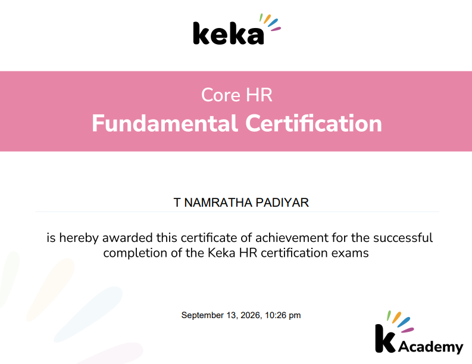
Keka · Core HR Training
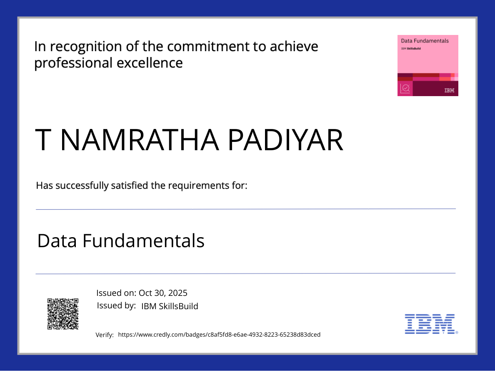
IBM SkillsBuild · Data Fundamentals
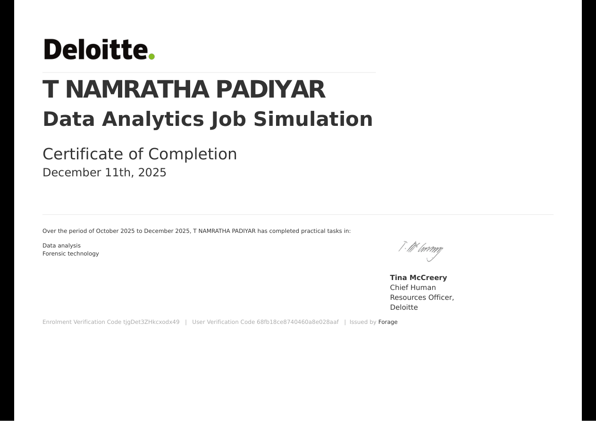
Deloitte · Data Analytics Job Simulation
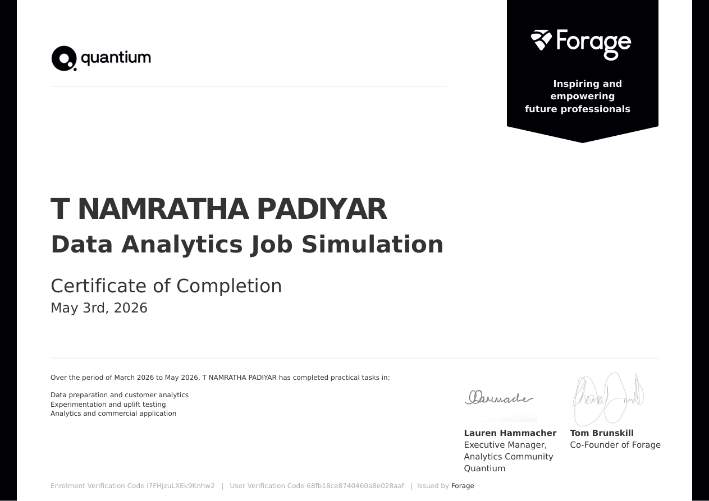
Quantium (Forage) · Data Analytics Job Simulation
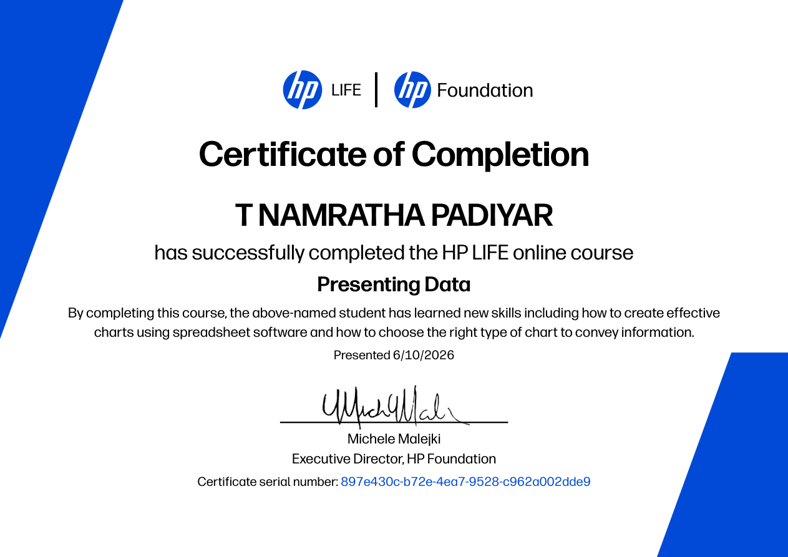
HP LIFE · Presenting Data
LEADERSHIP, RESEARCH & ACTIVITIES
Worked with senior research teams on data collection, review and presentation activities. Presented two research papers at national conferences, including NMITCON 2025, strengthening evidence-based thinking, collaboration, and communication.
Coordinated a semester-long initiative focused on practical and creative mathematics, encouraging participation, recognition, and consistent student engagement.
Designed and coordinated a two-stage technical event, working with participants, judges, sponsors, and organising stakeholders to create a fair and approachable participant experience.
Served as Captain of the MCA C-Section Tug of War team for two years, leading through coordination, discipline, motivation, and a strong sense of team spirit.
CONTACT
Thank you for visiting my portfolio. I'm always excited to discuss People & Culture, HR operations, HR analytics, employee experience, and opportunities where I can contribute through structured, people-focused problem solving.